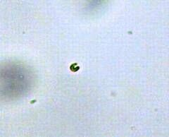

成都蔚瑞 生物科技有限公司
Waiting for you技术意义
目前，急性毒性测试较好的发光细菌法，因仪器重、价贵、使用交流电等，携带不便、购买受限、不能现场测试。便携式测温仪质量轻、价廉、使用蓄电池等，携带方便、购买容易、可以现场测试。
因此，急性毒性藻红外测试技术研究，可以互补、丰富急性毒性微生物测试法，增加、提高污染毒物检测分析的手段与能力。
成员简介
 郭蔚华(1956－)，男，副教授，研究方向为微生物水处理技术、水环境藻类等，E-mail:gwhchl@ 163．com
郭蔚华(1956－)，男，副教授，研究方向为微生物水处理技术、水环境藻类等，E-mail:gwhchl@ 163．com
林艳（1978－），博士，硕士生导师，从事水资源保护、饮用水安全等研究，E-mail: sister2000@163.com
贺栋才中国市政二程西南设计研究院， 四川成都６ １０ ０ ８ １
藻红外技术
由于工业废水、生活污水的排放、农药施用、防腐剂和添加剂的使用等，环境、饮水、农副产品、食品等中微浓度有毒有害物普遍存在，为保障人畜生命安全和健康质量，为保护生态环境和生物多样性，重庆大学郭蔚华科研小组十年潜心研究，自主研发出有毒有害物急性毒性藻红外测试分析技术，测试有毒有害物对藻细胞的毒性大小和联合毒性。该技术获得国家三项发明专利。
藻类具有光合磷酸化和氧化磷酸化的两套能量代谢系统，当微量的有毒有害物进入藻细胞引起的微小能量变化能被红外线测温仪测试，然后将测试数据进行处理便可对有毒有害物对藻细胞的毒性大小和联合毒性作出分析。
技术组成：便携式红外测温仪、数据处理软件、测试材料（藻液，测试小杯）、测试方法。
技术核心：毒物之间的联合毒性测试分析
技术特点：测试快速、操作简单、成本低廉、可现场测试。
技术稳定性：重现性67~100%。
测试对象：工业废水、饮用水和饮用源水、果蔬农药残留、食品防腐剂和添加剂等。
测试杯中加入 5 mL 藻液，滴加1滴待测药液，用红外测温仪测试加药前后的藻液温度，将测得数据输入数据分析软件，即可分析毒物对藻的毒性大小和联合毒性。
联系我们!
获得藻红外数据处理软件： AITAS软件，用以分析测定有害有毒物对藻细胞的毒性大小和联合毒性。
软件依据据“三指标法”原理开发，能最大限度帮助您完成测定。
如果您有意向，请 联系我们, 最快时间获得系统及配套设施。
藻红外技术应用领域
该技术用于检测、科研的领域和行业有环境、食品、农业、养殖、渔业、医药、化工等。
- 测试快速
- 操作简单
- 成本低廉
- 现场测试